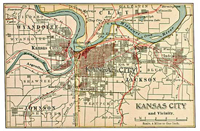
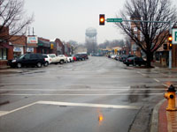

Since 1821, a large city just over the Kansas-Missouri state line had begun to evolve into a major stop on the trail, rail road and road systems. By the early 1900s, Kansas City was a burgeoning metropolitan city and had changed from trading post to destination. In 1905 William B. Strang, Jr., was staying in Kansas City with a relative when he explored the area to the west of the city and recognized its potential as a bedroom community for the metro area. Strang was particularly intrigued by a plot of land owned by several farm families and situated on a bluff; the combination of high ground and proximity to the city led him to purchase the land and start laying out a series of new communities. Thus Overland Park was created—the name is reputed to be a combination of the vision of a "park-like" city crossed with the alternate name for the Santa Fe Trail (Overland Trail).
Since the 1980s, Overland Park has experienced a fairly consistent boom pattern, with growth in population, industry and reputation. While continuing to look forward, the city administration has also appreciated its past by supporting extensive renovations of the historic downtown area during the early 1990s. Present day Overland Park has been a regular on national ratings for quality of life, education, affordable housing, appeal to businesses, and population growth. It's a young community in many ways, with a mature approach to living and contributing.
Thanks to Strang and other early residents of the area, Overland Park was gradually becoming a viable entity on its own merits. As an attempt to manage the swift growth in Overland Park, Mission, and Prairie Village, these collective communities were organized into an urban township form of government under a law passed by the Kansas legislature in 1940. The reborn entity, Mission Urban Township, was able to form a governmental body but lacked the right to zone or plan independently. In combination with the repercussions of the Dust Bowl days and World War II, Mission Urban Township experienced a time of stasis in the late 1930s and early 1940s, followed by a boom in residential development.
In 1951, the Kaw River flooded Kansas City while the community on the bluff stayed nice and dry, and Mission Township began to see an influx of slightly damp folks. The current system of government was insufficient to deal with the resultant growth and development, leading to separation of the township communities into municipalities and the incorporation of Overland Park in 1960.